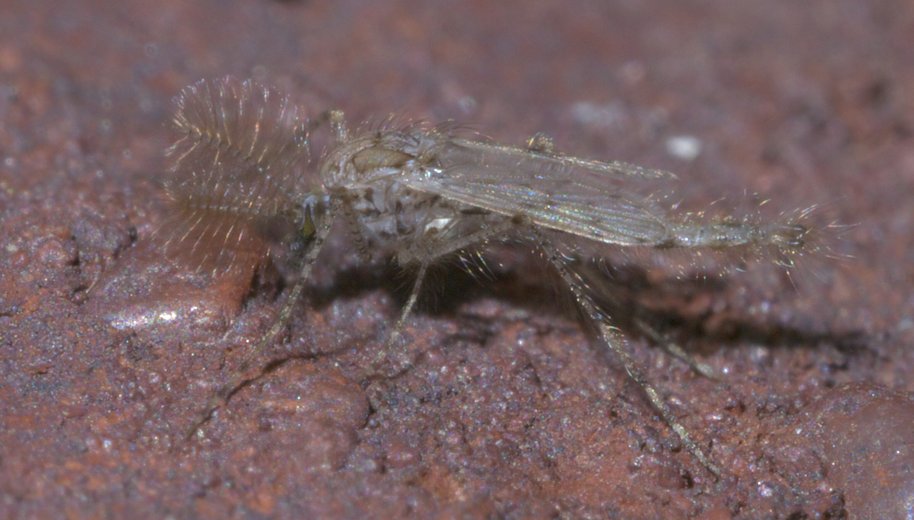
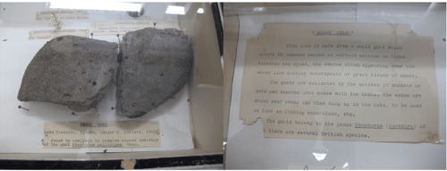
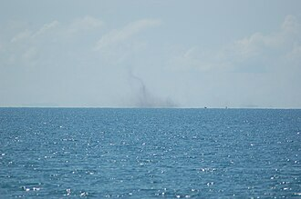
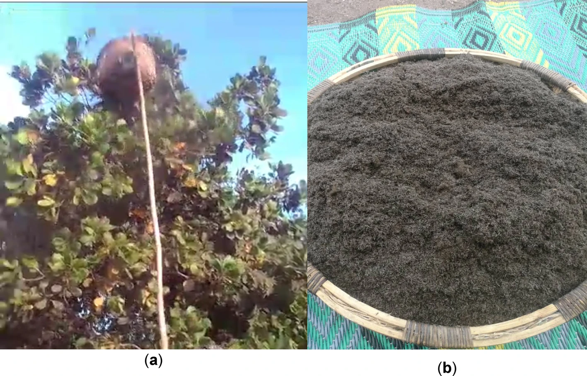

地址：
eatletters.example
吃掉这些字母
EAT THESE LETTERS
KUNGU
湖面
餐 后 阅 读FIELD NOTES / 01
你刚才吃掉的
 原图局部放大
原图局部放大马拉维湖考察，2023 · 来源：UBC Matthews Lab
考察记录 · 原始照片 · 原图分辨率有限

Chaoborus punctipennis，并非 C. edulis。
Robert Webster / xpda.com · 原图 · CC BY-SA 4.0

查看博物馆参访记录 ↗
KUNGU · 马拉维湖边的飞虫饼
字母背后，是一种真实的食物。马拉维湖周边有采集湖飞虫、将它们制成饼食用的记录，常见名称为 kungu 或 nkhungu。上面展示的是馆藏实物，并非刚出锅的食物。
01
湖面上的“烟云”

原图 · CC BY-SA 2.0
相关研究记录了 Chaoborus edulis。它们属于幽蚊科；Chaoborus 成虫不叮咬人。这里的湖飞虫，不能笼统叫作“吸血蚊子”。
02
从采集到餐桌

研究原文 · CC BY 4.0
一项马拉维湖研究记录了用长柄篮采集成虫、清理杂物，再制作成饼的过程，并比较了烤、煮、煎等处理方式。这是当地食物知识的一部分，不同地点的食材与做法也可能有所不同。
真实食物 / 字母演绎
湖飞虫与飞虫饼是真实的；飞虫变成 k、u、n、g、u，用锅接字母、推拢压实和几秒煎熟，是这件作品的演绎。游戏湖景为生成的扫描风格图，饼为简化贴图；本页资料照片是实拍：本种成虫近照来自马拉维湖考察，同属参考图单独标注。
继续阅读 · 资料来源
- Roth & Parma（1970），A Chaoborus Bibliography：不叮咬的成虫及食用记录。
- Chirambo 等（2026），Discover Food：马拉维湖湖飞虫的采集与处理研究。
- The Human Use of Insects as a Food Resource，Chapter 18：飞虫饼的历史记录及组成差异。
就绪